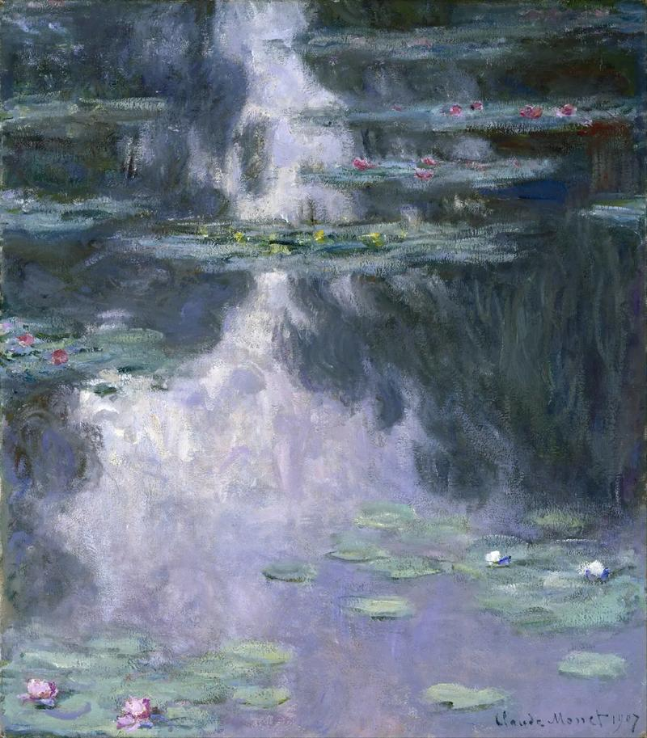
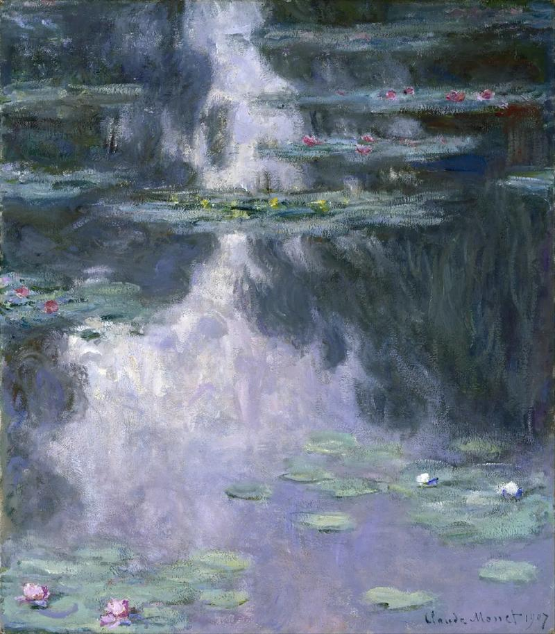

| 返回 | 池塘睡莲系列 | 下一作品 |
|
||

|
||
《睡莲》：莫奈一生画的睡莲作品有数十幅之多，很多都属于组画，所谓“组画”，就是画家在同一位置上，面对同一物象，在不同时间、不同的光照下所作的多幅画作。区分它们的，仅仅只是大师对光与色的瞬间捕捉。这是莫奈晚年作品中的一个特色。 《池塘·睡莲》（法文作品原名：Le Bassin Aux Nympheas）：规格99×93厘米，创作于1918至1919年间。是莫奈以睡莲为主题的重要晚期作品之一。这幅油画倾注了莫奈极大的创作热情，他对于光和影的运用在该作品中达到登峰造极的地步，远远超出了对物体本身的描绘。 莫奈的睡莲画作在他生前并未得到广泛的认可，但它们在艺术历史中的地位越来越重要。这些画作强调了自然之美的独特方式，同时也是对印象派艺术运动的巅峰表现。 睡莲画作启发了无数艺术家，尤其是后来的抽象艺术家，他们从中汲取了创作灵感。这些作品也在20世纪中期的抽象表现主义艺术中扮演了关键角色，如杰克逊·波洛克（Jackson Pollock）等艺术家。 《池塘·睡莲》是印象派的鼎盛时期的代表作品，其中创作于1907年的作品。莫奈的绘画技法和自身的研习都已经到了登峰造极的地步。在看似随意轻松的笔触中却将光线的美感，水面上自然漂浮的睡莲的温柔表现的淋漓尽致。他的《睡莲》色彩十分丰富，但是所有的颜色在画面中都是分外的柔和和均衡。仅仅是描绘莲花的颜色也是随着光线和环境的影响而色彩变化多端，让人虽不能一口断定是什么颜色的睡莲，但是却又觉得那些娇艳的睡莲就近在眼前。甚至是那些捉摸不透的笔触都好像在描绘着莫奈当时对池中睡莲的喜爱。作为印象派大师，莫奈无疑将他自己喜爱的睡莲描绘的更加活灵活现。湖中的倒影和湖面上的睡莲看似都是有色块堆砌而成，却疏密虚实相得益彰，让人一目了然却又回味无穷。 克洛德·莫奈的睡莲画作是对自然之美的绝妙表达，它们强调了光线、色彩和和谐的重要性，成为了艺术史上的经典之一。这些画作将观众带入一个充满梦幻、宁静和抽象之美的世界，留下了不可磨灭的印记。莫奈的睡莲成为了永恒的艺术之美的象征。
|